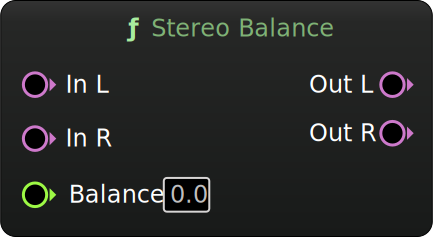

Stereo Balance
Adjust the balance of a stereo signal.
Inputs
| Name | Description | Type |
|---|---|---|
| In L | Left channel. | Audio |
| In R | Right channel. | Audio |
| Balance | Balance control ranging from -1.0 (full left) to 1.0 (full right). | Float |
Outputs
| Name | Description | Type |
|---|---|---|
| Out L | Left channel of the adjusted stereo output signal. | Audio |
| Out R | Right channel of the adjusted stereo output signal. | Audio |